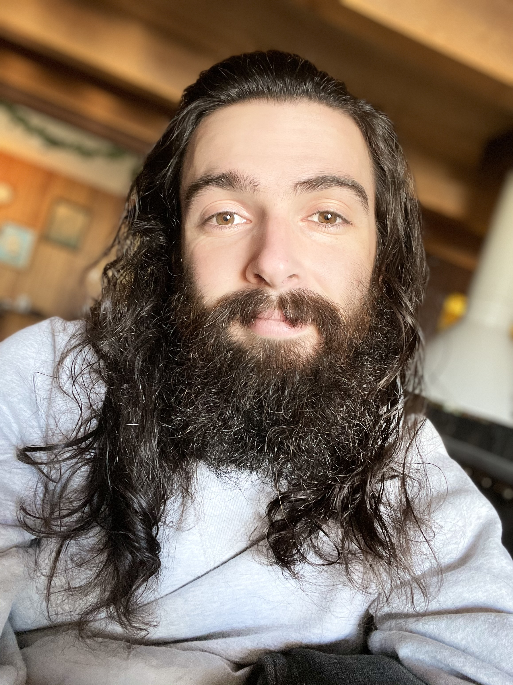

About

Skills
Languages
Javascript | Python | C# | HTML | CSSAttributes
Diciplined | Motivated | Responsible | Focused | Adaptive-Learner | Organized | CollaboratorGoal
I aspire to become a software developer to tackle new and exciting problems that help make everyday
life a little more efficient, intuitive and fun, while being part of team that prioritizes growth and improvement.
Through my work I hope to create a life for myself and my family that is comfortable,
and is full of joy and success. I am sure that I will be a pivitol part of a any team that shares the same goal as mine.
Work Experience
Target | Dept. Manager | Aug/2018 - May/2021
As a department manager I was responsible for the everyday oporations of the department and it's employees. From invetory validation to sale stragedies I was a pivitol part of the wider team of the store. I would create, validate, and execute plans to increase sales, efficiency, and accuracy of the department.
As the manager of the electronics department I was also responsible for training all employees tasked to me, not limited to my department. Additionally, we were responsible for the tech support side of store opporations. This would include, activating cellphones, trouble shooting tech issues, maintaining small electrical equipment, and training other team members on the latest tech. This was all to achieve a better guest experience and drive sales.
This position strengthened my leadership skills , adaptability , resolve and to ge the job done. Working with the general public and the leadership team also increased my ability of public speaking.
MasonJar Tavern, The | Cook | Jan./2016 - July/2018
As a general line cook I was responsible for cooking excelent quality meals in a as little time as possible. This was a fast-passed enviroment that required time management skills, self dicipline, and a fantastic work ethic.
My responsibilities included maintaining a clean work enviroment, preparing ingredients, creating recipes, and working effectively with a team.